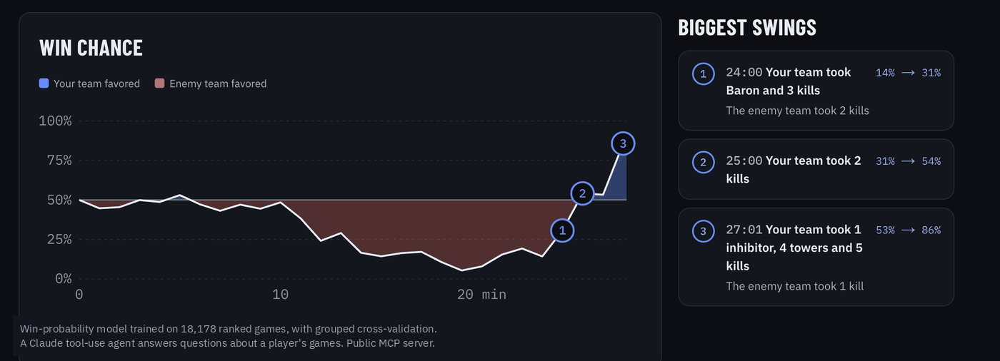

Jasper Li
I build tools that turn raw game data into something a player can act on.
I'm a computer science student at the University of Toronto. I like projects where the hard part is turning messy data into an answer someone can use, and most of mine start with games I play.
Lately that's meant full-stack TypeScript, Postgres, and small machine learning models written from scratch. I'm looking for internships and teams where I can ship real things and learn from people who've done it longer.
- Peaked Grandmaster in League of Legends top 0.07%
- Peaked Eternity in Marvel Rivals top 0.15%

Turnpoint
Jaspyplayz/League-Web-App ↗A League of Legends match analyzer. It compares you to the enemy in your role minute by minute and explains the turning points that decided the game, using win-chance and game-score models I wrote from scratch in TypeScript.
Live at league-web-app.vercel.app
- TypeScript
- Python
- Next.js
- React
- Tailwind CSS
- Postgres
- Supabase
- Drizzle
- Vitest
- Playwright
- GitHub Actions
- Vercel